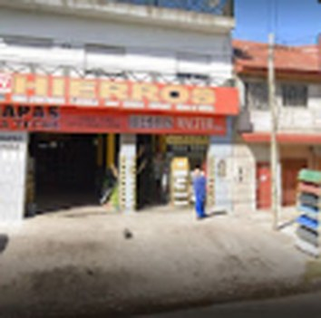

HierrosHierros Walter S.A
Hierro para construcción, mallas, perfiles, caños estructurales, chapas y alambres, con entrega en obra.
- Hierro aletado
- Mallas sima
- Perfiles C
- Caño estructural
- Chapas
- Alambre
Bernaldes Polledo 178Lun. a vie. 8 a 17 h · Sáb. 8 a 13 h4,3 en Google (88 opiniones)